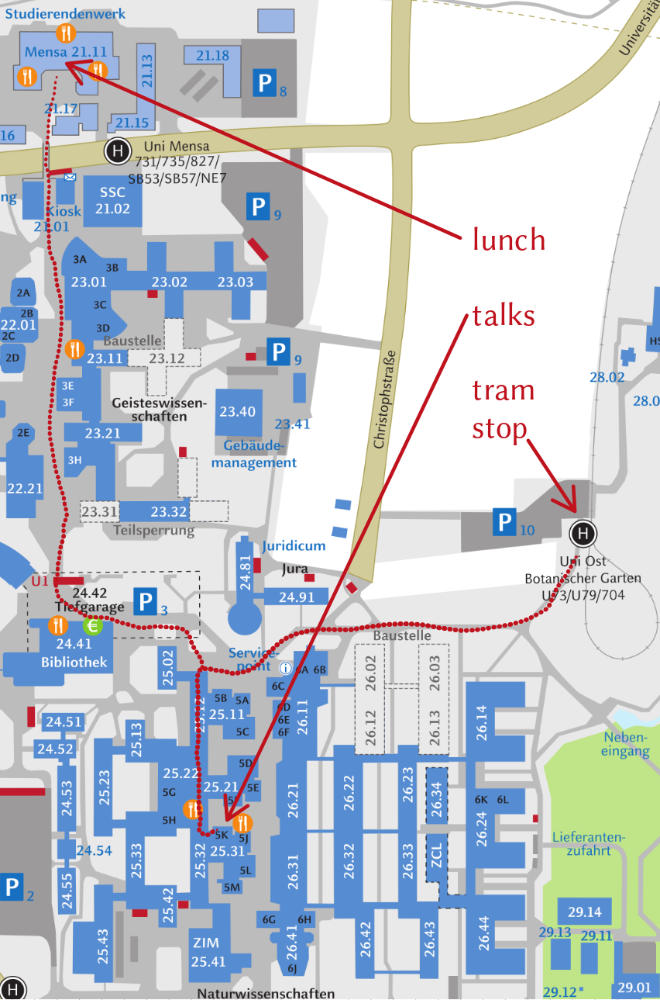

Venues
Talks
All tutorials, lectures and talks take place on the main campus of Heinrich Heine University (GoogleMaps, OpenStreetMap). The colloquium talks take place in lecture hall 5K, as indicated on the campus map below. (For the tutorial, registered participants have received further details by email.)
Hotel
The tutors, colloquium speakers and most tutorial participants will be staying at Wyndham Garden Düsseldorf City Centre Königsallee (GoogleMaps, OpenStreetMap)
Conference dinner
There will be a conference dinner on Thursday at Wilma Wunder (GoogleMaps, OpenStreetMap); subway/tram stops: Schadowstraße or Steinstraße/Königsallee. Please note that the dinner is for registered participants only.
Getting around in Düsseldorf
For all of the below routes, you need a ticket of type Preisstufe A = Preisstufe A3. There is a choice of single tickets, tickets valid for several trips (e.g. 4 trips) and tickets valid for a specific time (e.g. 24 hours). If you take a tram or subway for at most three stops (e.g. main station → hotel), you can also take a cheaper Kurzstrecken-Ticket. Some tickets from ticket vending machines need to be validated using the stamp machines on the trains/trams/subways.
airport (DUS) → main station (Düsseldorf Hbf)
- We recommend taking the S11 (Direction: Bergisch Gladbach), which leaves one floor below the arrival terminals. (The alternative is to take the “skytrain” suspension train to the airport train station, from which several regional trains leave to Düsseldorf main station.)
main station (Düsseldorf Hbf) → hotel
- Option 1: walk (10–15 minutes)
- Option 2: Take the tram 709 (towards either Südfriedhof or Neuss). The tram stops are in front of the main entrance (Konrad-Adenauer-Platz) of the main station. It is the tram stop furthest away from the entrance. Get off at Berliner Allee (after 2 stops). Then walk.
hotel → university
- Option 1: from the subway station Graf-Adolf-Platz U take subway U73 towards Universität Ost/Botanischer Garten; get off at the final stop (Universität Ost/Botanischer Garten).
- Option 2 (takes a bit longer): walk to the main station and follow the instructions under “main station (Düsseldorf Hbf) → university”
main station (Düsseldorf Hbf) → university
- Take the subway U79 towards Universität Ost/Botanischer Garten; departure is below the main station hall; get off at the final stop: Universität Ost/Botanischer Garten.
Campus map
